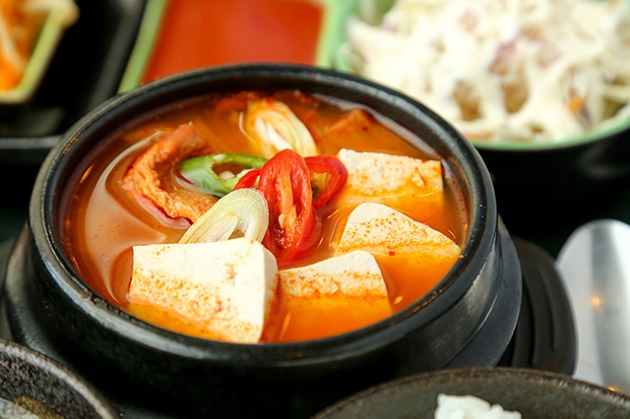
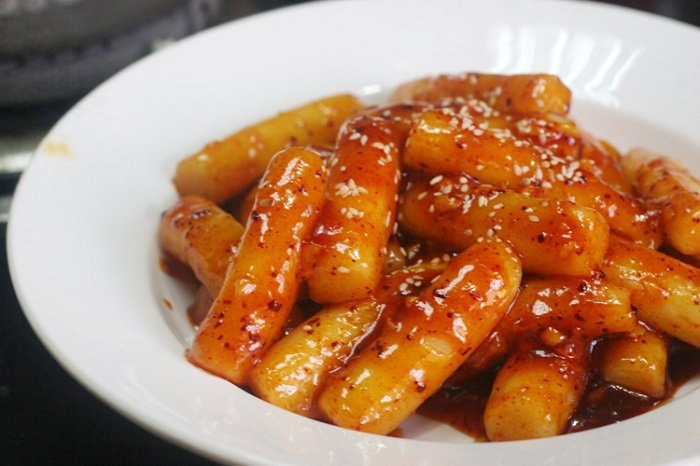
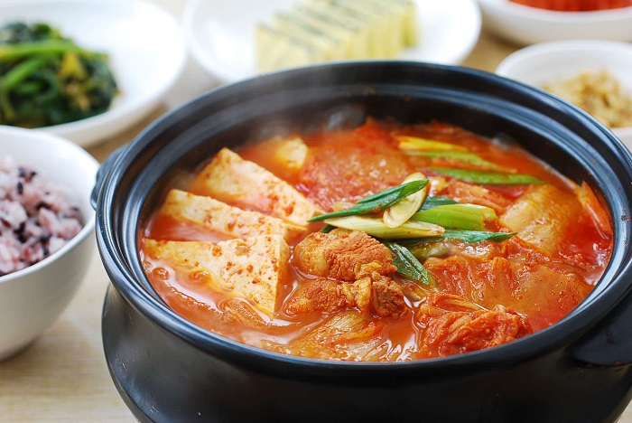
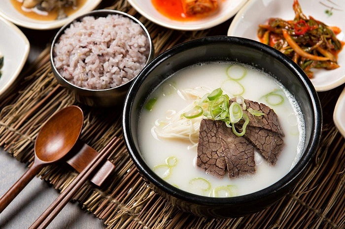
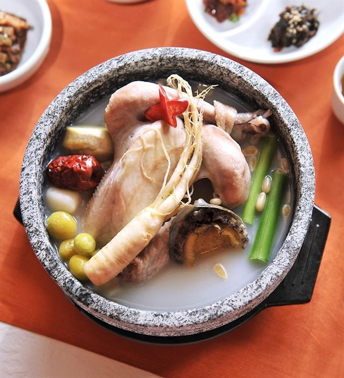
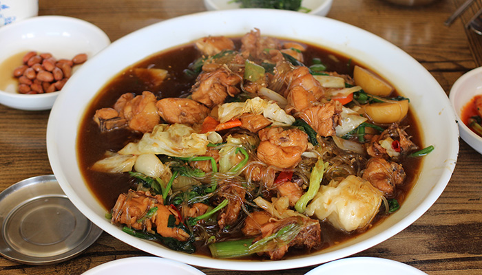

Du lịch Hàn Quốc
Welcome to Korea
Welcome to Korea
Đứng đầu bảng trong danh sách những món ăn Hàn Quốc vào mùa đông đó chính là sudubu jjigae hay còn gọi là canh đậu phụ hầm cay. Món ăn này được chế biến từ nhiều loại nguyên liệu khác nhau như đậu phụ, rau, nấm, hải sản, thịt bò, tương ớt,… Tất cả sẽ được hầm bên trong một chiếc nồi bằng đá nhằm mục đích giữ nhiệt lâu nhất có thể.
Tại mỗi cùng của Hàn Quốc lại có những cách chế biến và thưởng thức món canh này khác nhau. Tuy nhiên, cách ăn tuyệt vời nhất đó là khi canh được múc ra bát, đặt trên bàn, thực khách sẽ đập vào bên trong đó một quả trứng sống. Canh đậu phụ hầm cay thường được ăn cùng với cơm trắng, trong những ngày thời tiết lạnh giá quả thật rất thích hợp.
Nói đến những món ăn của Hàn Quốc mùa đông nổi tiếng nhất thì chắc chắn không thể không nhắc tới bánh gạo cay. Loại bánh này được làm từ bột gạo xay với độ dẻo dai và hương thơm quyến rũ. Bánh sẽ được hầm trong nước hầm thịt cùng với chả cá, hành lá và không thể thiếu được loại tương ớt đặc trưng của Hàn Quốc.
Thưởng thức món bánh gạo cay, bạn sẽ cảm nhận được vị thơm ngọt của gạo, vị dai giòn của chả cá hòa quyện với vị ngọt tương ớt. Đặc biệt, vị cay nóng đặc trưng khiến món ăn này trở thành một sự lựa chọn hoàn hảo để xua tan đi cái lạnh của mùa đông Hàn Quốc.
Du lịch Hàn Quốc vào những ngày mùa đông bạn nhất định phải thưởng thức món canh kim chi cay. Kim chi từ lâu đã luôn được xem là một biểu tượng của nền ẩm thực Hàn Quốc và được người dân nơi đây ăn quanh năm. Vào mùa đông, kim chi sẽ được hầm cùng với thịt lợn, thịt bò hoặc hải sản. Vị chua chua, cay cay của kim chi kết hợp hoàn hảo với vị thơm ngọt của nước hầm, tạo thành một món ăn mùa đông Hàn Quốc thơm ngon tuyệt vời, khiến bất cứ ai khi nhìn thấy cũng đều muốn thưởng thức ngay lập tức.
Có một điều khá thú vị trong văn hóa ẩm thực Hàn Quốc đó là người dân nơi đây rất thích ăn canh. Vào những ngày mùa đông lạnh giá, những món ăn nóng hổi càng trở thành sự lựa chọn lý tưởng cho mỗi bữa ăn. Và canh xương bò hầm chắc chắn cũng không thể nằm ngoài danh sách.
Món ăn này được nấu từ thịt bò và xương bò ninh kỹ trong nhiều giờ. Theo nhiều tài liệu lịch sử, canh xương bò hầm đã xuất hiện tại Hàn Quốc từ khoảng thế kỷ thứ 15. Nó không chỉ có hương vị thơm ngon mà còn rất bổ dưỡng. Do vậy, món canh này đã trở thành món ăn phổ biến, được nhiều người dân bản địa cũng như khách du lịch yêu thích.
Một trong những món ăn Hàn Quốc vào mùa đông cũng rất nổi tiếng mà bạn nên thưởng thức đó chính là canh gà hầm sâm. Người ta vẫn thường nói rằng đến Hàn Quốc mà không nếm thử canh hà hầm sâm thì coi như chưa đến. Nó cũng giống như đến Việt Nam nhất định phải thưởng thức một tô phở bò vậy.
Canh gà hầm sâm có tên tiếng Hàn là Samgytang, đã xuất hiện ở Hàn Quốc từ nhiều năm về trước và được cả thế giới biết đến trong khoảng vài chục năm trở lại đây. Nguyên liệu chính để nấu món ăn này gồm có thịt gà, nhân sâm, táo đỏ, bạch quả, hoàng kỳ,… cùng một số loại gia vị cần thiết. Cách chế biến cũng hết sức cầu kỳ và tỉ mỉ. Món ăn này có thành phần dinh dưỡng rất cao, vì vậy cực kỳ tốt cho sức khỏe, đặc biệt với những người đang cần bồi bổ do thể trạng yếu.
Gà hầm rau củ là một món ăn Hàn Quốc vào mùa đông nổi tiếng có nguồn gốc từ vùng Andong, thuộc tỉnh Gyeongsangbuk. Các nguyên liệu để chế biến món ăn tuy không có gì đặc biệt nhưng để kết hợp chúng lại với nhau lại đòi hỏi một sự khéo léo.
Khi om gà, người đầu bếp phải luôn chú ý đến nhiệt độ của lửa để thịt gà vừa mềm, vừa không bị khô. Ngoài thịt gà, món ăn này còn có cả miến cùng nhiều loại rau củ ăn kèm giúp bớt ngán hơn. Người ta thường thưởng thức gà hầm rau củ cùng với cơm trắng.
GỢI Ý TOUR DU LỊCH HÀN QUỐC |
|---|
>> Du Lịch Hàn Quốc: Hà Nội – Seoul – Lotte World – Trượt Tuyết Jangjipine 5 Ngày Trượt Tuyết Bay Jeju Air chỉ với 12.500.000 đồng
|
Nếu như bạn đang tìm một món ăn đường phố Hàn Quốc mùa đông để thưởng thức thì bánh nhân đường nâu chính là sự lựa chọn số một dành cho bạn. Món bánh này có nguồn gốc từ Trung Quốc và du nhập vào Hàn Quốc vào khoảng cuối thế kỷ thứ 19. Phần vỏ bánh vàng ruộm, giòn tan cùng phần nhân bên trong ngọt lịm khiến nó trở thành một món ăn vặt khoái khẩu của người dân xứ kim chi cũng như khách du lịch.

Ẩm thực Hàn Quốc dù vào bất cứ mùa nào cũng không hề làm chúng ta phải thất vọng đúng không nào. Hy vọng rằng những món ăn được giới thiệu ở trên sẽ giúp bạn có được những trải nghiệm đáng nhớ nhất trong chuyến đi sắp tới. Đừng quên theo dõi những tin tức du lịch Hàn Quốc mới nhất của chúng tôi nhé.
Top 20 điểm tham quan nhất định phải ghé thăm trong hành trình chinh phục Seoul

Điện thoại: 0903357616
Email: thaontps24690@fpt.edu.vn